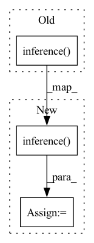

Pattern ID :22401
Before Change
def inference(self, resized_rgb_image):
// Here should inference on the image, output a list of objects, each obj is a dict with two keys "id" and "bbox" and "score"
// return [{"id": 0, "bbox": [x1, y1, x2, y2], "score":s%}, {...}, {...}, ...]
return self.net.inference( resized_rgb_image)
After Change
output: List of objects, each obj is a dict with two keys "id" and "bbox" and "score"
e.g. [{"id": 0, "bbox": [x1, y1, x2, y2], "score":s%}, {...}, {...}, ...]
output = self.net.inference( resized_rgb_image)
return output
In pattern: SUPERPATTERN
Frequency: 4
Non-data size: 3
Instances Fragment ID: 70922170
Project Name: neuralet/smart-social-distancing
Commit Name: cd16bb1ce196b55f8965d5cf76ed12602913afcb
Time: 2020-04-12
Author: mehraliangit@gmail.com
File Name: libs/detectors/edgetpu/detector.py
M Class Name: Detector
N Class Name: Detector
M Method Name: inference(2)
N Method Name: inference(2)
M Parent Class:
N Parent Class:
M File Name: libs/detectors/edgetpu/detector.py
N File Name: libs/detectors/edgetpu/detector.py
M Start Line: 23
M End Line: 23
N Start Line: 32
N End Line: 33
Before Change
wav_tensor, sample_rate = torchaudio.load(path)
mel_tensor = wav2mel(wav_tensor, sample_rate)
cached_speaker_embedding = dvector.embed_utterance(mel_tensor)
cached_duration = dc(acoustic_model.inference(text_tensor=text.squeeze(0).to(device),
speech_tensor=melspec.to(device),
use_teacher_forcing=True,
speaker_embeddings=cached_speaker_embedding.to(device)) [2],
vis=os.path.join(cache_dir, "durations_visualization", path.split("/")[-1].rstrip(".wav") + ".png"))[0].cpu()
cached_energy = energy_calc(input=norm_wave.unsqueeze(0),
input_lengths=norm_wave_length,After Change
wav_tensor, sample_rate = torchaudio.load(path)
mel_tensor = wav2mel(wav_tensor, sample_rate)
cached_speaker_embedding = dvector.embed_utterance(mel_tensor)
attention_map = acoustic_model.inference(text_tensor=text.squeeze(0).to(device),
speech_tensor=melspec.to(device),
use_teacher_forcing=True,
speaker_embeddings=cached_speaker_embedding.to(device)) [2]
focus_rate = self._calculate_focus_rate(attention_map)
cached_duration = dc(attention_map,
vis=os.path.join(cache_dir, "durations_visualization",
str(int(focus_rate * 1000)) + path.split("/")[-1].rstrip(".wav") + ".png"))[0].cpu()
cached_energy = energy_calc(input=norm_wave.unsqueeze(0), Fragment ID: 70922168
Project Name: digitalphonetics/ims-toucan
Commit Name: d976a59df996c408eced318b4f425227c436a6da
Time: 2021-09-05
Author: florian.lux@ims.uni-stuttgart.de
File Name: TrainingInterfaces/Text_to_Spectrogram/FastSpeech2/FastSpeechDataset.py
M Class Name: FastSpeechDataset
N Class Name: FastSpeechDataset
M Method Name: cache_builder_process(11)
N Method Name: cache_builder_process(11)
M Parent Class: Dataset
N Parent Class: Dataset
M File Name: TrainingInterfaces/Text_to_Spectrogram/FastSpeech2/FastSpeechDataset.py
N File Name: TrainingInterfaces/Text_to_Spectrogram/FastSpeech2/FastSpeechDataset.py
M Start Line: 147
M End Line: 151
N Start Line: 147
N End Line: 154
Before Change
def inference(self, resized_rgb_image):
// Here should inference on the image, output a list of objects, each obj is a dict with two keys "id" and "bbox" and "score"
// return [{"id": 0, "bbox": [x1, y1, x2, y2], "score":s%}, {...}, {...}, ...]
return self.net.inference( resized_rgb_image)
After Change
output: List of objects, each obj is a dict with two keys "id" and "bbox" and "score"
e.g. [{"id": 0, "bbox": [x1, y1, x2, y2], "score":s%}, {...}, {...}, ...]
output = self.net.inference( resized_rgb_image)
return output
Fragment ID: 70922162
Project Name: neuralet/smart-social-distancing
Commit Name: 67a0b9b5af10b039d73d71b50faa81f5a92e8f24
Time: 2020-04-12
Author: mehraliangit@gmail.com
File Name: libs/detectors/jetson/detector.py
M Class Name: Detector
N Class Name: Detector
M Method Name: inference(2)
N Method Name: inference(2)
M Parent Class:
N Parent Class:
M File Name: libs/detectors/jetson/detector.py
N File Name: libs/detectors/jetson/detector.py
M Start Line: 24
M End Line: 24
N Start Line: 32
N End Line: 33
Before Change
cached_speech_len = torch.LongTensor([len(cached_speech)])
if not speaker_embedding:
os.path.join(cache_dir, "durations_visualization")
cached_duration = dc(acoustic_model.inference(text_tensor=text.squeeze(0).to(device),
speech_tensor=melspec.to(device),
use_teacher_forcing=True,
speaker_embeddings=None) [2],
vis=os.path.join(cache_dir, "durations_visualization", path.split("/")[-1].rstrip(".wav") + ".png"))[0].cpu()
else:
wav_tensor, sample_rate = torchaudio.load(path)After Change
cached_speech_len = torch.LongTensor([len(cached_speech)])
if not speaker_embedding:
os.path.join(cache_dir, "durations_visualization")
attention_map = acoustic_model.inference(text_tensor=text.squeeze(0).to(device),
speech_tensor=melspec.to(device),
use_teacher_forcing=True,
speaker_embeddings=None) [2]
focus_rate = self._calculate_focus_rate(attention_map)
cached_duration = dc(attention_map,
vis=os.path.join(cache_dir, "durations_visualization",
str(int(focus_rate * 1000)) + "_" + path.split("/")[-1].rstrip(".wav") + ".png"))[0].cpu() Fragment ID: 70922164
Project Name: digitalphonetics/ims-toucan
Commit Name: ab75b11e270921ed26f285aef0265568c3612ebe
Time: 2021-09-05
Author: florian.lux@ims.uni-stuttgart.de
File Name: TrainingInterfaces/Text_to_Spectrogram/FastSpeech2/FastSpeechDataset.py
M Class Name: FastSpeechDataset
N Class Name: FastSpeechDataset
M Method Name: cache_builder_process(11)
N Method Name: cache_builder_process(11)
M Parent Class: Dataset
N Parent Class: Dataset
M File Name: TrainingInterfaces/Text_to_Spectrogram/FastSpeech2/FastSpeechDataset.py
N File Name: TrainingInterfaces/Text_to_Spectrogram/FastSpeech2/FastSpeechDataset.py
M Start Line: 138
M End Line: 142
N Start Line: 138
N End Line: 145